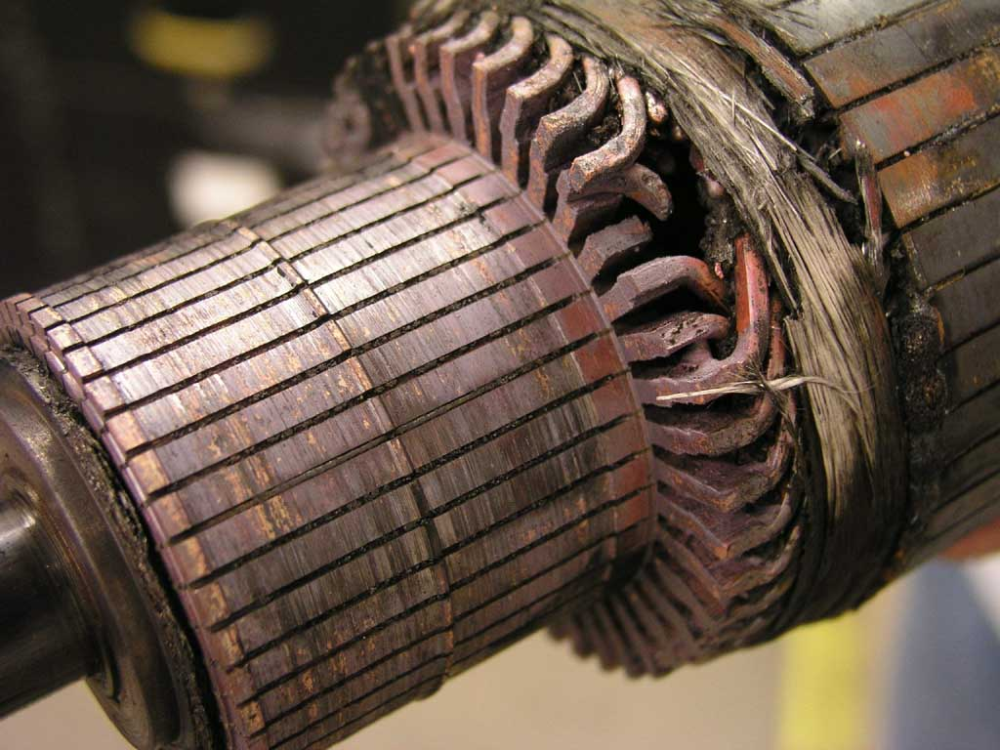
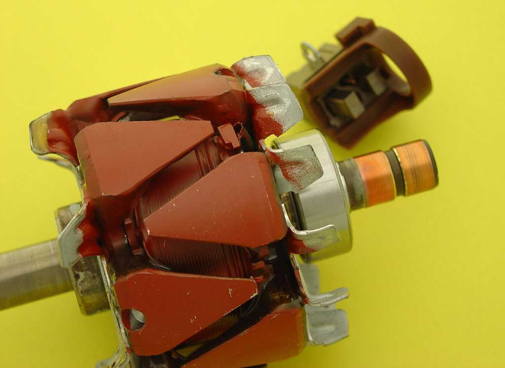

AeroElectric Connection
|
Bob's Shop Notes: |
|
Bob's Shop Notes: |
|  Larger Image | Alternators in various forms have been the engine driven power sources of choice for a variety of earth and airborne vehicles since the 1950's. They don't mind being belted to run fast so one does not give up service life by choosing pulley ratios that produce useful electrical output even at low engine speeds. Generators had major service life problems with brushes sliding over slotted commutators. The problem was exacerbated by the fact that brushes had to carry the machine's full output current. This photo illustrates the potential for destruction of an exemplar 400A generator's commutator where brushes routinely carry 300+ amps in flight and 1500 amps tapering to 300 amps over 20 seconds each time the engine is started. |
| Alternators have brushes but they ride on smooth slip-rings. Further, even the largest automotive alternators require the brushes to carry no more than 3 or 4 amps. Over the years, great strides have been made for getting more power out of smaller machines. The modern 40-100 amp alternators are very high volume and therefore low cost options for addressing power requirements for airborne systems and in particular, for owner built and maintained (OBAM) aircraft. This photo shows the smaller, smooth slip rings and tiny brushes in the background that are typical of the modern alternator. |  Larger Image |
{kind=link}
{kind=link}